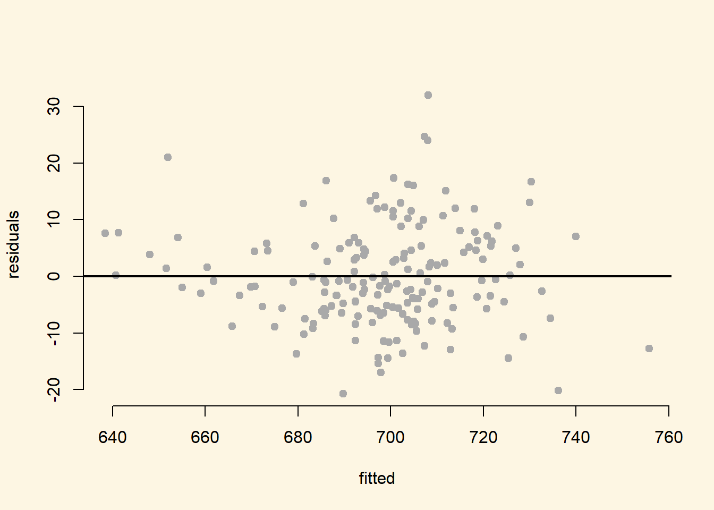

9.2 Solutions
9.2.0.1 Exercise 1
Load chechen.csv. We will load it directly from the github source.
# load texreg library for model output tables
library(texreg)
# chechen data
a <- read.csv("https://uclspp.github.io/datasets/data/chechen.csv")9.2.0.2 Exercise 2
Run a bivariate regression model with diff as the dependent variable and treat as the predictor.
# bivariate model
m1 <- lm(diff ~ treat, data = a)
screenreg(m1)
======================
Model 1
----------------------
(Intercept) -0.10
(0.12)
treat -0.52 **
(0.17)
----------------------
R^2 0.03
Adj. R^2 0.02
Num. obs. 318
RMSE 1.54
======================
*** p < 0.001, ** p < 0.01, * p < 0.05The effect of Russian artillery shelling is significant and negative. Therefore, it seems that indiscriminate violence in this case reduces insurgent violence. There are many potential confounders, however, that we will control for in the next exercise.
The interpretation on the magnitude of the effect is the following: The dependent variable is the change in the number of insurgent attacks. The independent variable is binary. Therefore, there was half an attack less, on average, in villages that had been bombarded by Russian artillery.
9.2.0.3 Exercise 3
Control for additional variables. Discuss your choice of variables and refer to omitted variable bias.
We control for the amount of attacks before the village was bombarded (pret). We reason that villages that saw more insurgent activity already, were more likely to be bombarded and might see more insurgent activity after bombardment as well. Furhtermore, we control for logged elevation lelev because attacks may be more likely in remote mountainous terrain and it may have been harder for the Russians to control such areas. With a similar argument we control groznyy and lpop2000, were the argument is that urban areas may see more insurgent actitivities and are harder to control. We also control for swept to account for the possibility that previous sweeps in the area have reduced the likelihood of subsequent shelling and insurgent activity.
# multivariate model
m2 <- lm(diff ~
treat +
pret +
lelev +
groznyy +
lpop2000 +
swept +
factor(disno),
data = a)
screenreg(list(m1, m2))
======================================
Model 1 Model 2
--------------------------------------
(Intercept) -0.10 -0.93
(0.12) (1.64)
treat -0.52 ** -0.39 *
(0.17) (0.16)
pret -0.28 ***
(0.03)
lelev 0.07
(0.24)
groznyy 2.03 **
(0.67)
lpop2000 0.13
(0.07)
swept -0.02
(0.19)
factor(disno)3 -0.14
(0.52)
factor(disno)4 0.44
(0.66)
factor(disno)5 -0.09
(1.11)
factor(disno)6 0.08
(0.59)
factor(disno)7 -0.37
(1.41)
factor(disno)8 -0.74
(0.78)
factor(disno)9 -0.14
(0.68)
factor(disno)10 -0.49
(0.51)
factor(disno)11 -0.22
(0.60)
factor(disno)14 0.04
(0.53)
factor(disno)15 -0.14
(0.56)
--------------------------------------
R^2 0.03 0.32
Adj. R^2 0.02 0.28
Num. obs. 318 318
RMSE 1.54 1.32
======================================
*** p < 0.001, ** p < 0.01, * p < 0.059.2.0.4 Exercise 4
Discuss the improvement in model fit and use the appropriate test statistic.
# f-test
anova(m1, m2)Analysis of Variance Table
Model 1: diff ~ treat
Model 2: diff ~ treat + pret + lelev + groznyy + lpop2000 + swept + factor(disno)
Res.Df RSS Df Sum of Sq F Pr(>F)
1 316 751.99
2 300 526.42 16 225.57 8.0342 0.0000000000000005841 ***
---
Signif. codes: 0 '***' 0.001 '**' 0.01 '*' 0.05 '.' 0.1 ' ' 1We increase adjusted R^2 substantially. While R^2 almost always increases and never decreases, adjusted R^2 might decrease. We use the F test to test whether are added covariates are jointly significant - whether the improvement in explanatory power of our model could be due to chance. We reject the null hypothesis that both models do equally well at explaining the outcome. Our larger model improves model fit.
9.2.0.5 Exercise 5
Check for non-linearity and if there is, solve the problem.
# create residuals variable in data set
a$residuals <- m2$residuals
# check residual plots with continuous variable
plot(residuals ~ pret, data = a)We only have one continuous variable in our model that has not already been transformed to deal with non-linearity: the number of insurgent attacks before shelling pret. The residual plot does not reveal a non-linear relation.
9.2.0.6 Exercise 6
Check for heteroskedasticity and if there is solve the problem.
library(lmtest) # contains BP test function
bptest(m2) # null is constant error which we reject
studentized Breusch-Pagan test
data: m2
BP = 78.61, df = 17, p-value = 0.0000000006764library(sandwich) # contains sandwich estimator robust SE's
# estimate model 2 again with corrected standard errors
m3 <- coeftest(m2, vcov. = vcovHC(m2, type = "HC1"))
# compare models
screenreg(list(m2,m3))
======================================
Model 1 Model 2
--------------------------------------
(Intercept) -0.93 -0.93
(1.64) (1.25)
treat -0.39 * -0.39 *
(0.16) (0.15)
pret -0.28 *** -0.28 ***
(0.03) (0.04)
lelev 0.07 0.07
(0.24) (0.20)
groznyy 2.03 ** 2.03 *
(0.67) (1.02)
lpop2000 0.13 0.13 *
(0.07) (0.05)
swept -0.02 -0.02
(0.19) (0.23)
factor(disno)3 -0.14 -0.14
(0.52) (0.67)
factor(disno)4 0.44 0.44
(0.66) (0.82)
factor(disno)5 -0.09 -0.09
(1.11) (0.75)
factor(disno)6 0.08 0.08
(0.59) (0.77)
factor(disno)7 -0.37 -0.37
(1.41) (0.67)
factor(disno)8 -0.74 -0.74
(0.78) (0.84)
factor(disno)9 -0.14 -0.14
(0.68) (0.72)
factor(disno)10 -0.49 -0.49
(0.51) (0.70)
factor(disno)11 -0.22 -0.22
(0.60) (0.73)
factor(disno)14 0.04 0.04
(0.53) (0.71)
factor(disno)15 -0.14 -0.14
(0.56) (0.71)
--------------------------------------
R^2 0.32
Adj. R^2 0.28
Num. obs. 318
RMSE 1.32
======================================
*** p < 0.001, ** p < 0.01, * p < 0.05The result is that heteroskedasticity robust standard errors do not change our findings. The estimated robust standard errors are actually smaller than the ones estimated under the constant error assumption. The effect remains significant either way but we would choose the larger standard errors.
9.2.0.7 Exercise 7
Thoroughly compare the models, and interpret the outcome in substantial as well statistical terms - do not forget to talk about model fit. What are the implications of this?
# compare models
screenreg(list(m1,m2,m3))
=================================================
Model 1 Model 2 Model 3
-------------------------------------------------
(Intercept) -0.10 -0.93 -0.93
(0.12) (1.64) (1.25)
treat -0.52 ** -0.39 * -0.39 *
(0.17) (0.16) (0.15)
pret -0.28 *** -0.28 ***
(0.03) (0.04)
lelev 0.07 0.07
(0.24) (0.20)
groznyy 2.03 ** 2.03 *
(0.67) (1.02)
lpop2000 0.13 0.13 *
(0.07) (0.05)
swept -0.02 -0.02
(0.19) (0.23)
factor(disno)3 -0.14 -0.14
(0.52) (0.67)
factor(disno)4 0.44 0.44
(0.66) (0.82)
factor(disno)5 -0.09 -0.09
(1.11) (0.75)
factor(disno)6 0.08 0.08
(0.59) (0.77)
factor(disno)7 -0.37 -0.37
(1.41) (0.67)
factor(disno)8 -0.74 -0.74
(0.78) (0.84)
factor(disno)9 -0.14 -0.14
(0.68) (0.72)
factor(disno)10 -0.49 -0.49
(0.51) (0.70)
factor(disno)11 -0.22 -0.22
(0.60) (0.73)
factor(disno)14 0.04 0.04
(0.53) (0.71)
factor(disno)15 -0.14 -0.14
(0.56) (0.71)
-------------------------------------------------
R^2 0.03 0.32
Adj. R^2 0.02 0.28
Num. obs. 318 318
RMSE 1.54 1.32
=================================================
*** p < 0.001, ** p < 0.01, * p < 0.05The goal of analysis was to test whether indiscriminate violence leads to more resistance. The variable of interest is, therefore, treat which indicates whether a Chechnian village was bombarded or not. In our initial model, we found a significant and negative effect. Thereby, we contradict the theory because the effect seems to go the other way.
We were concerned about confounding and including a number of variables in the model. We controled for terrain, geographic areas in the country, urban areas, attacks before artillery bombardment, and prior sweeps. The change in the coeffcient is large. The difference is (\(-.52 - -0.39 = -0.13\)). That is 25% of the original effect. Although, the effect decreased substantially when we control for confounders, it is still significant. The difference between villages that were bombarded and those that were not is \(0.39\) attacks on average.
We are not substantially interested in the control variables. According to the model with the larger standard errors, pret, and groznyy are also significant. Insurgent attacks were more numerous in Groznyy. Interestingly, the more attacks there were before the bombardment , the fewer attacks happened afterwards.
Model fit improves substantially, from \(0.03\) in our first model to \(0.32\). Although, the second model explains the outcome better that is not what we care about. We are interested in the effect of indiscriminate violence. We prefer the larger model because we control for potential confounders and our estimate less of an overestimate.
9.2.0.8 Exercise 8
Load who_voted_nazi_in_1932.csv.
# clear workspace
rm(list=ls())
a <- read.csv("https://uclspp.github.io/datasets/data/who_voted_nazi_in_1932.csv")9.2.0.9 Exercise 9
Run a bivariate model to test whether blue-collar voters voted for the Nazis.
# summary stats
summary(a) shareself shareblue sharewhite sharedomestic
Min. : 5.799 Min. :11.44 Min. : 2.205 Min. : 3.721
1st Qu.:14.716 1st Qu.:25.26 1st Qu.: 6.579 1st Qu.:14.410
Median :18.196 Median :30.35 Median : 8.751 Median :26.230
Mean :18.589 Mean :30.82 Mean :11.423 Mean :25.443
3rd Qu.:22.186 3rd Qu.:35.87 3rd Qu.:13.577 3rd Qu.:35.250
Max. :31.340 Max. :54.14 Max. :51.864 Max. :52.639
shareunemployed nvoter nazivote sharenazis
Min. : 1.958 Min. : 5969 Min. : 2415 Min. :12.32
1st Qu.: 7.456 1st Qu.: 23404 1st Qu.: 9196 1st Qu.:33.96
Median :11.934 Median : 35203 Median : 15708 Median :41.47
Mean :13.722 Mean : 65118 Mean : 25193 Mean :41.57
3rd Qu.:18.979 3rd Qu.: 67606 3rd Qu.: 27810 3rd Qu.:48.61
Max. :39.678 Max. :932831 Max. :318746 Max. :74.09 m1 <- lm(sharenazis ~ shareblue, data = a)
screenreg(m1)
=======================
Model 1
-----------------------
(Intercept) 39.56 ***
(1.66)
shareblue 0.07
(0.05)
-----------------------
R^2 0.00
Adj. R^2 0.00
Num. obs. 681
RMSE 10.80
=======================
*** p < 0.001, ** p < 0.01, * p < 0.059.2.0.10 Exercise 10
Our dataset does not contain much information. We only know about the share of diffrent groups in the district: white collar workers, blue collar workers, self employed, domestically employed, and unemployed. We control for these variables.
A model that would only include blue collar workers omits information about the social make of the district that is necessarily related to the share of blue collar workers. For, example if there are mostly white collar workers in a district that means, there are less blue collar workers, all else equal. If we only have blue collar in our model, we do not know whether most other people are unemployed or white collar workers and so on.
m2 <- lm(sharenazis ~ shareblue + sharewhite + shareself + sharedomestic, data = a)9.2.0.11 Exercise 11
Can you fit a model using shareblue, sharewhite, shareself, sharedomestic, and shareunemployed as predictors? Why or why not?
Such a model would suffer from perfect multicollinearity. Whichever variable we entered last into our model would be dropped automatically. If we add the share of the five groups, we get 100%. Thus, if we know the share of four gropus in a district, we necessarily know the share of the remaining group in the district.
For example if shareblue=30, shareunemployed=15, sharedomestic=25, shareself=20, the four groups are together 90% of the district. The remaining 10% must be white collar workers.
Therefore, adding shareblue, shareunemployed, sharedomestic, and shareself to our model already gives us information about how many white collar workers there are in a district. Were we to add the variable sharewhite, we would enter the same information twice - leading to perfect multicollinearity.
9.2.0.12 Exercise 12
Check for heteroskedasticity and if there is solve the problem.
# tests on our models
bptest(m1)
studentized Breusch-Pagan test
data: m1
BP = 18.578, df = 1, p-value = 0.00001631bptest(m2)
studentized Breusch-Pagan test
data: m2
BP = 95.811, df = 4, p-value < 0.00000000000000022# robust SE's
m1.robust <- coeftest(m1, vcov. = vcovHC(m1))
m2.robust <- coeftest(m2, vcov. = vcovHC(m2))
# compare standard errors
screenreg(list(m1, m1.robust, m2, m2.robust),
custom.model.names = c("m1", "m1 robust", "m2", "m2 robust"))
===========================================================
m1 m1 robust m2 m2 robust
-----------------------------------------------------------
(Intercept) 39.56 *** 39.56 *** -2.82 -2.82
(1.66) (1.68) (7.01) (6.28)
shareblue 0.07 0.07 0.57 *** 0.57 ***
(0.05) (0.05) (0.09) (0.08)
sharewhite 0.31 * 0.31 **
(0.13) (0.11)
shareself 1.14 *** 1.14 ***
(0.19) (0.23)
sharedomestic 0.08 0.08
(0.10) (0.11)
-----------------------------------------------------------
R^2 0.00 0.11
Adj. R^2 0.00 0.10
Num. obs. 681 681
RMSE 10.80 10.24
===========================================================
*** p < 0.001, ** p < 0.01, * p < 0.05Correcting for heteroskedasticity does not change our results.
9.2.0.13 Exercise 13
Interpret your models.
screenreg(list(m1,m2))
=====================================
Model 1 Model 2
-------------------------------------
(Intercept) 39.56 *** -2.82
(1.66) (7.01)
shareblue 0.07 0.57 ***
(0.05) (0.09)
sharewhite 0.31 *
(0.13)
shareself 1.14 ***
(0.19)
sharedomestic 0.08
(0.10)
-------------------------------------
R^2 0.00 0.11
Adj. R^2 0.00 0.10
Num. obs. 681 681
RMSE 10.80 10.24
=====================================
*** p < 0.001, ** p < 0.01, * p < 0.05A prominent theory suggests that Nazis received a lot of their support from blue-collar workers. In model 1, we only include the percentage of blue collar workers in a district. The variable is insignificant but we are likely suffering from omitted variable bias because we are omitting other aspects of the social make-up of the district that are related to the share blue collar workers.
We omit one category from our models to avoid perfect multicollinearity. In model 2, it seems that blue-collar workers did support the Nazis. More so, than white-collar workers. They received most of their support from the self-employed, though.
9.2.0.14 Exercise 14
Load the Massachusetts Test Scores dataset MA_Schools.csv.
rm(list=ls())
a <- read.csv("MA_Schools.csv")
summary(a) district municipality expreg expspecial
Min. : 1.0 Abington: 1 Min. :2905 Min. : 3832
1st Qu.: 84.5 Acton : 1 1st Qu.:4065 1st Qu.: 7442
Median :163.5 Acushnet: 1 Median :4488 Median : 8354
Mean :170.9 Agawam : 1 Mean :4605 Mean : 8901
3rd Qu.:269.2 Amesbury: 1 3rd Qu.:4972 3rd Qu.: 9722
Max. :350.0 Amherst : 1 Max. :8759 Max. :53569
(Other) :214
expbil expocc exptot scratio
Min. : 0 Min. : 0 Min. :3465 Min. : 2.300
1st Qu.: 0 1st Qu.: 0 1st Qu.:4730 1st Qu.: 6.100
Median : 0 Median : 0 Median :5155 Median : 7.800
Mean : 3037 Mean : 1104 Mean :5370 Mean : 8.107
3rd Qu.: 0 3rd Qu.: 0 3rd Qu.:5789 3rd Qu.: 9.800
Max. :295140 Max. :15088 Max. :9868 Max. :18.400
NA's :9
special lunch stratio income
Min. : 8.10 Min. : 0.40 Min. :11.40 Min. : 9.686
1st Qu.:13.38 1st Qu.: 5.30 1st Qu.:15.80 1st Qu.:15.223
Median :15.45 Median :10.55 Median :17.10 Median :17.128
Mean :15.97 Mean :15.32 Mean :17.34 Mean :18.747
3rd Qu.:17.93 3rd Qu.:20.02 3rd Qu.:19.02 3rd Qu.:20.376
Max. :34.30 Max. :76.20 Max. :27.00 Max. :46.855
score4 score8 salary english
Min. :658.0 Min. :641.0 Min. :24.96 Min. : 0.0000
1st Qu.:701.0 1st Qu.:685.0 1st Qu.:33.80 1st Qu.: 0.0000
Median :711.0 Median :698.0 Median :35.88 Median : 0.0000
Mean :709.8 Mean :698.4 Mean :35.99 Mean : 1.1177
3rd Qu.:720.0 3rd Qu.:712.0 3rd Qu.:37.96 3rd Qu.: 0.8859
Max. :740.0 Max. :747.0 Max. :44.49 Max. :24.4939
NA's :40 NA's :25 Fit a model to explain the relationship between percentage of English learners and average 8th grade scores.
m1 <- lm(score8 ~ english, data = a)
screenreg(m1)
=======================
Model 1
-----------------------
(Intercept) 702.99 ***
(1.44)
english -3.64 ***
(0.44)
-----------------------
R^2 0.28
Adj. R^2 0.28
Num. obs. 180
RMSE 17.89
=======================
*** p < 0.001, ** p < 0.01, * p < 0.059.2.0.15 Exercise 15
Plot the model and the regression line.
plot(score8 ~ english,
data = a,
pch = 19,
frame.plot = FALSE,
col = "darkgray")
abline(m1, lwd = 3)9.2.0.16 Exercise 16
Check for correlation between the variables listed above to see if there are other variables that should be included in the model.
a <- a[, c("score8", "stratio", "english", "lunch", "income")]
summary(a) score8 stratio english lunch
Min. :641.0 Min. :11.40 Min. : 0.0000 Min. : 0.40
1st Qu.:685.0 1st Qu.:15.80 1st Qu.: 0.0000 1st Qu.: 5.30
Median :698.0 Median :17.10 Median : 0.0000 Median :10.55
Mean :698.4 Mean :17.34 Mean : 1.1177 Mean :15.32
3rd Qu.:712.0 3rd Qu.:19.02 3rd Qu.: 0.8859 3rd Qu.:20.02
Max. :747.0 Max. :27.00 Max. :24.4939 Max. :76.20
NA's :40
income
Min. : 9.686
1st Qu.:15.223
Median :17.128
Mean :18.747
3rd Qu.:20.376
Max. :46.855
# remove NA's
a <- a[ !is.na(a$score8), ]
# check correlation
cor(a) score8 stratio english lunch income
score8 1.0000000 -0.3164449 -0.5312991 -0.8337520 0.7765043
stratio -0.3164449 1.0000000 0.2126209 0.2875544 -0.2616973
english -0.5312991 0.2126209 1.0000000 0.6946009 -0.2510956
lunch -0.8337520 0.2875544 0.6946009 1.0000000 -0.5738153
income 0.7765043 -0.2616973 -0.2510956 -0.5738153 1.0000000Both lunch and income are highly correlated with the percent of English learners and with the response variable. We add both to our model.
m2 <- lm(score8 ~ english + lunch + income, data = a)9.2.0.17 Exercise 17
Compare the two models. Did the first model suffer from omitted variable bias?
screenreg(list(m1,m2))
===================================
Model 1 Model 2
-----------------------------------
(Intercept) 702.99 *** 678.59 ***
(1.44) (3.45)
english -3.64 *** -0.25
(0.44) (0.31)
lunch -0.72 ***
(0.07)
income 1.70 ***
(0.15)
-----------------------------------
R^2 0.28 0.83
Adj. R^2 0.28 0.83
Num. obs. 180 180
RMSE 17.89 8.80
===================================
*** p < 0.001, ** p < 0.01, * p < 0.05The comparison between models 1 and 2, shows that the performance of the children is related to poverty rather than language. The two are, however, correlated.
9.2.0.18 Exercise 18
Plot the residuals against the fitted values from the second model to visually check for heteroskedasticity.
a$residuals <- m2$residuals # mistakes
a$fitted <- m2$fitted.values # predictions
plot(residuals ~ fitted,
data = a,
pch = 19,
col = "darkgray",
frame.plot = FALSE)
abline(h=0, lwd = 2)
The plot looks okay. I would not conclude that the model violates the constant errors assumption.
9.2.0.19 Exercise 19
Run the Breusch-Pagan Test to see whether the model suffers from heteroskedastic errors.
bptest(m2) # we cannot reject the null -> yay :)
studentized Breusch-Pagan test
data: m2
BP = 2.3913, df = 3, p-value = 0.4953The Bresch Pagan test confirms, the constant error assumption is not violated.
9.2.0.20 Exercise 20
Correct for heteroskedasticity (if needed) and present the results with corrected standard errors and p-values.
We do not need to do this because the constant error assumption is not violated.